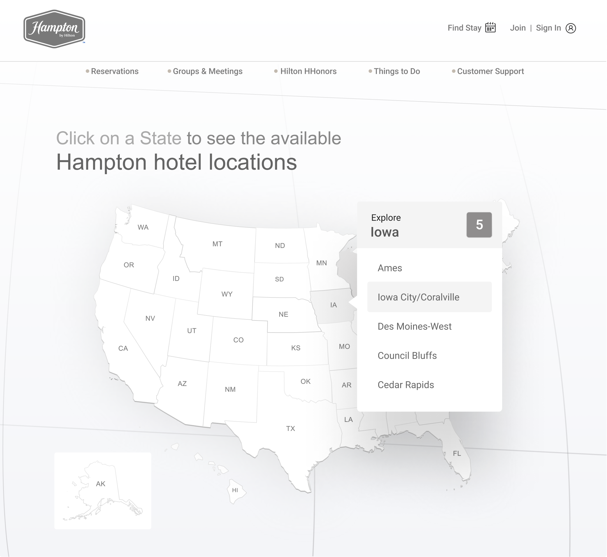
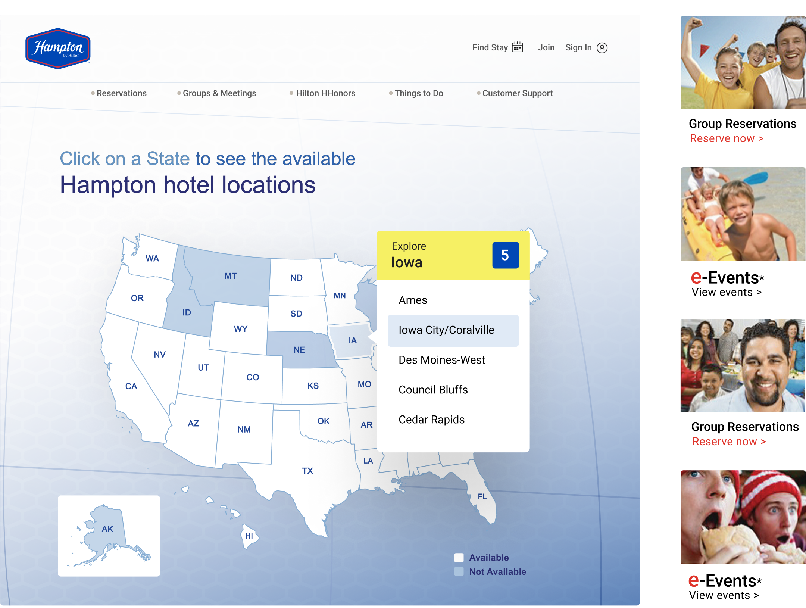

<div class="view">
<div class="template-inner template-inner--case-study" style='background-color:#fff'>

    <div class="case-study-wrapper">
        <div class='text-center case-study-section case-study-section--hero' style='background-color:#F4F5F8'>
            <div class="case-btn-back-wrapper">
                <a href='/page/case-studies' id="case-study-back" class="btn btn-link">
                    
                </a>
            </div>
            <div class="case-study__content">
                <h1>Find a Hampton hotel <br> location near you</h1>
                <p> User Experience, Visual & Interaction Design, Content Strategy, and Testing.</p>
            </div>
            <div class="img-wrap  case-hero__picture case-study-inner-content ">
                <picture class="img-full ">
                    <source 
                        media="(max-width: 768px)" 
                        srcset="../../assets/images/M_HamptonHero.png"
                    />
                    
                </picture>
            </div>
        </div>
        <!-- end section -->
        <div class="case-study-section">
            <div class="case-study-inner-content">
                <h2 class="text-center">Project Overview</h2>
                <p class="">I was contracted to design for the Hilton family of brands, focusing on an intricate campaign for Hampton Hotels. The project aimed to enhance engagement for Group Reservations and e-Events through a strategy that included landing pages, online banners, and an interactive location-based map. I proposed the map concept to display the number of Hampton hotels by state, connecting users to booking options. Over three months, I collaborated with a project manager and engineers to develop wireframes, prototypes, and high-fidelity designs, using an array structure to visually represent hotel locations and details. After refining functional elements and testing the prototype, we delivered banners, wireframes, and a landing page showcasing the campaign’s final design.</p>
                <picture>
                    <source 
                        media="(max-width: 768px)" 
                        srcset="../../assets/images/M_HamptonWireframe.png"
                    />
                    
                </picture>
            </div>
            <div class="case-study-inner-content">
                <h2 class="text-center">Outcome and impact</h2>
                <p class="">The final designs for the interactive landing page and promotional banners were delivered ahead of schedule. These designs adhered to Hilton's brand standards for Hampton Hotels but also performed exceptionally well among users making group reservations and those selecting Hampton locations through e-Events. A 3% increase underscored the effectiveness of our collaborative efforts in enhancing user engagement.</p>
                <picture>
                    <source 
                        media="(max-width: 768px)" 
                        srcset="../../assets/images/M_HamptonFinal.png"
                    />
                    
                </picture>
            </div>
        </div>
        <!-- end section -->
    </div>
</div>
</div>
